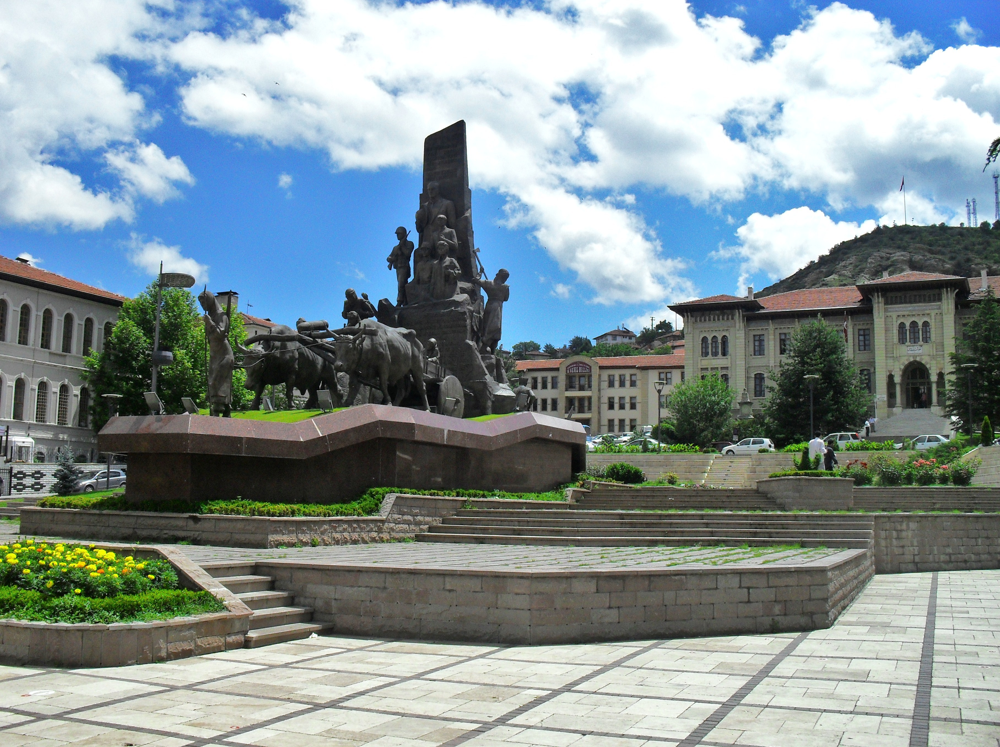
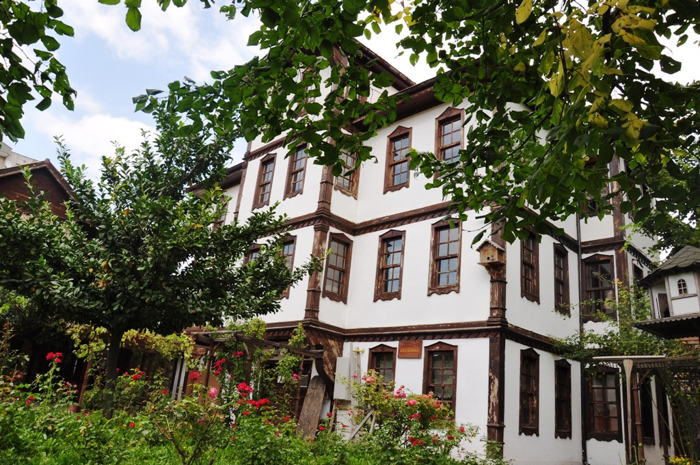
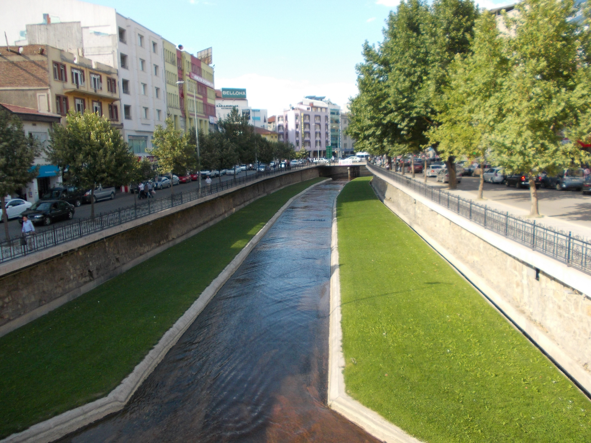

152.553
Kişi yaşamakta.

KASTAMONU'YA HOŞGELDİNİZ!
Binlerce yıllık tarihe tanıklık etmiş bu şehirde, ayağınızı bastığınız her yer tarihi eser niteliğindedir.
SARIMSAĞIN BAŞKENTİ!
Ana vatanı Kastamonu ilinin Taşköprü ilçesi olan sarımsak, eşsiz kokusuyla ve keskin tadıyla kendini diğer sarımsaklardan öne çıkarmaktadır.


KASTAMONU EVLERİ!
Bu eski tarihi ahşap evler kendinizi her an tarihi bir müzedeymiş gibi hissetmenizi sağlar.
DOĞA İLE İÇ İÇE BİR ŞEHİR!
Şehrin ana caddelerinde bile yeşillik hiç eksik olmaz. Burada hiç görmediğiniz bitkileri görebilirsiniz. Üstelik onları aramanıza gerek yoktur.
